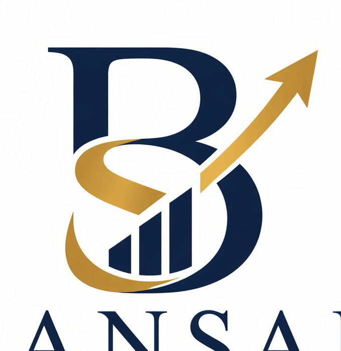

Strategic advisory for enterprise finance, capital strategy and AI-enabled transformation
Enterprise finance built for sharper decisions, stronger balance sheets and accountable AI.
Bansal StratEdge partners with financial institutions and corporates to improve capital allocation, modernize FP&A, strengthen performance management and move finance from retrospective reporting to forward-looking decision support.

Strategic mandate
Bansal StratEdge Pvt. Ltd.
Capital Strategy
Connect capital allocation, finance modernization and AI governance in one operating agenda.
Enterprise Finance
Scenario-led FP&A and executive decision support.
Balance Sheet
Funding architecture, capital efficiency and performance discipline.
AI Governance
Practical analytics and AI for regulated, high-consequence environments.
Delivery Model
- Diagnostic clarity
- Pragmatic design
- Scalable execution
Built for CFO offices
Financial institutions
Corporate treasury & strategy teams
Complex and regulated environments
High-accountability transformation programs
Capabilities
A focused advisory platform for finance teams under pressure to modernize and perform.
Our work is structured around the high-value decisions where finance, capital strategy and AI adoption intersect most directly.
01
Enterprise Finance & FP&A
Redesign planning and performance rhythms so leadership teams can move from static budgeting to faster, scenario-based decision-making.
- Scenario planning and forecasting
- Management reporting redesign
- Decision-oriented finance dashboards
02
Capital Strategy & Balance Sheet Outcomes
Improve how capital, liquidity, funding choices and strategic trade-offs are evaluated across the enterprise.
- Capital allocation frameworks
- Balance sheet optimization
- Performance-linked funding strategy
03
AI-Enabled Finance Transformation
Apply analytics and AI where they sharpen judgment, improve explainability and support more resilient governance.
- AI use-case prioritization
- Model governance in finance workflows
- Transformation design for regulated contexts
Why Bansal StratEdge
We bring finance depth first, then technology discipline around it.
The difference is not adopting more tools. It is designing a finance model that can absorb AI, governance, capital trade-offs and performance pressure without losing control.
Domain-led advisory
Built on enterprise finance, capital and balance sheet leadership rather than generic digital transformation playbooks.
Practical AI positioning
Focused on explainability, auditability and measurable decision value instead of experimentation for its own sake.
Institution-grade execution
Designed for organizations where regulatory pressure, governance expectations and strategic stakes are all high.

Leadership
Finance leadership shaped in global banking and now focused on future-ready CFO agendas.
Kamlesh Bansal brings more than two decades of enterprise finance and capital strategy experience across Citi, JPMorgan, Deutsche Bank, ING and ICICI. His work has centered on capital allocation, funding architecture, balance sheet strategy and enterprise performance governance.
His current public writing and research focus on the intersection of generative AI, capital allocation, corporate governance and the evolving role of finance leadership.
Selected Perspectives
Recent finance-focused writing and commentary.
We filtered out non-finance and personal topics to keep the focus on enterprise finance, capital strategy, AI and governance.

Featured financial blog
Transforming Finance for the Future: Embracing AI and Regulatory Change in Global Banking
A finance-focused perspective on how banks modernize planning, decision support and capital strategy while working inside regulatory and governance constraints.
Explore the finance blog pagePublic website post
AI, Capital Strategy and Financial Systems
Examines how AI can influence capital decisions, risk thinking and financial systems design for future-focused leaders.
Public LinkedIn commentary
Who Owns the Risk When Finance Models Go Wrong?
Frames AI risk in finance as a governance problem, not only a technology problem, with CFO accountability at the center.
Contact
Let’s design a more intelligent finance and capital agenda.
Bansal StratEdge works with organizations that need clearer finance decisions, stronger performance management and more disciplined AI-enabled transformation.